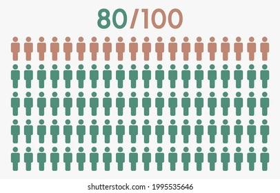

GET READY FOR SOME AWESOME BREAKDOWN About what? QUANT ANALYSIS
Quantitative analysis is analyzing data that is numbers based (only numbers) simple as that.
What is it used for?
- Measuring differences between groups - let's say people who support Gachagua impeachment and the ones who don't.
- Assessing relationship using variables - This means like getting the height of all kemu students.
- Testing hypotheses in a scientific rigorous way - Hii ni kama kutest job satisfaction and employee training you're testing two hypotheses.
Quant data heavily relies on statistical analysis methods these are: Averages (an average of something or data)
So there are two branches of quantitative analysis
- Descriptive - These are the mean, mode, median, standard deviation izo - they summarize the data providing insights into its characteristics.
- Inferential - Izi they are used to make predictions about a large population based on sample data (kama impeachment ya Gachagua a small sample was taken to make predictions on what sisi wote feel about him. Types of these data include:
- T-tests
- ANOVA
- Correlation Analysis
- Regression Analysis
So you need to choose the right statistical methods for research - how do you this:
- Data Types - This means nominal, ordinal, internal, ratio.
- Shape of Data - This is whether it is skewed, curved, line. See the image below.
Descriptive stats are crucial for understanding data which is izo ma mean, mode, median.
They inform researchers the shape of data and help them select the correct inferential statistics (refer to my Gachagua example.)Descriptive data give summary and features of a data set (sample) zinapatia researchers a clear concise picture of the data.
Keep in mind Descriptive stats only focus on the sample data they do not make predictions about the larger population. What does this? INFERENTIAL STATISTICS.
Now let's look at types of descriptive stats
- Mean - This is simple it is the average. MEAN=AVERAGE remember that.
- Mode - Most common most frequent value in the data.
- Median - The middle value in the dataset (if it is an odd data set you will get one number right in the middle of the text, if it is an even dataset you will get 2 numbers then divide by 2 okay).
Now there can be variability in descriptive stats this is where we get:
Standard deviation - This shows how data points deviate from mean on average.
Range - This is simple it is the difference btwn the highest and lowest value in a dataset
Now you must understand the shape of data.
- Skewness - It tells us about the symmetry of the data distribution.
- Kurtosis - This measure describes the peakedness or flatness of data.
These measures of shape are important because they can inform the selection of appropriate inferential statistical methods.
So why do you think descriptive statistics matter. Let me tell you.
They are the foundation of quantitative data analysis - it is crucial to understand the basic characteristics of the data set.
They help get a comprehensive view - Descriptive stats allow researchers to see both the big picture and finer details of their data. 
Identify potential errors - Unusual patterns in descriptive stats alert researchers to potential errors in their data.
They inform further analysis - Understanding shape of data and other key characteristics through descriptive stats. It is important to note that the choice of which descriptive statistics to use will depend on the specific research questions being asked and the type of data being analyzed.
Inferential stats: Making predictions and testing hypotheses. Inferential stats go a step further by allowing researchers like you to make predictions and draw conclusions about a large population based on what they observed in their sample. A hypothesis is testable statement about a predicted relationship between variables.
Now researchers use inferential statistics to assess whether their sample data provides enough evidence to support or refute their hypotheses.
Understanding the role of sampling.
The ability of inferential stats to make predictions about a population relies on the concept of sampling. It is often impossible or impractical to collect data from every member of a population we ebu fikiria iyo inaweza kweli?
Researchers select a smaller, representative group called a sample a nini? SAMPLE from which to collect data for inferential stats to work effectively, the sample must accurately reflect the characteristics of the population.
We can connect descriptive and inferential stats by choosing the right tools.
While they serve distinct purposes: they are interconnected in the research process.

The choices researchers make when analyzing quantitative data should be guided by a clear understanding of their research questions and nature of their data.
Here is a step by step approach to choosing the right statistical methods.
- Define your research questions and hypotheses.
- Do you have specific hypotheses you want to test?
- What are you trying to find out?
- Understand your data
- What type of data have you collected?
- What is the level of measurement?
- What is the shape of the data?
- Choose descriptive stats.
- Choose inferential stats.
- Interpret your results carefully.
So how does quantitative analysis work you ask?
Well since quantitative data analysis is all about analyzing numbers it's no surprise that it involves statistics.
Statistical analysis methods form the engine that powers quant analysis these methods can vary from pretty basic calculations for example averages and medians to more sophisticated analyses for example correlations.
Note this: Importantly you don't need to be a statistician or a math whiz to pull off a good quantitative analysis.
Descriptive statistics serve a simple but critically important role in your research to describe your data set hence the name in other words they help you understand the details of your sample. Unlike inferential statistics which don't aim to make inferences or predictions about the entire population they're purely interested in the details of your specific sample. Unacheki?
When you're writing up your analysis descriptive statistics are the first set of stats you'll cover before moving on to inferential statistics but depending on your research objectives and research questions they may be the only type of statistics that you use.
So to add on to why descriptive and inferential stats matter hear this.
They help you spot potential errors in the data for example if an average is way higher than you'd expect or responses to a question are highly varied this can act as a warning sign that you need to double check the data.
Also note that inferential statistics when done correctly allow you to connect the dots and make predictions about what you'd expect to see in the real world population based on what you observe in your sample data.
When you're working with inferential statistics the composition of your sample is really important in other words if your sample doesn't accurately represent the population you're researching then your findings won't necessarily be very useful. For example wacha nikusho if your population of interest is a mix of 50% male and 50% female but your sample is 80% male  you can't make inferences about the population based on your sample since it's not representative.
Descriptive statistics are so important since they tell you all about the shape of your data.
So now let me do a recap of what we've looked at.
As we discussed quantitative analysis is all about analyzing number based data which can include both categorical and numerical data these data are analyzed using statistical methods.
The two main branches of statistics are descriptive statistics and inferential statistics.
Descriptives describe your sample the slice of the cake while inferentials make predictions about what you'll find in the population the full cake 
Based on what you've observed in the sample as we saw common descriptive statistical metrics include the mean the median the mode standard deviation and skewness.
On the inferential side we looked at T tests, Anovas, Correlation analysis and regression analysis all of which can help you make predictions about the population.
Ya mwisho sasa we asked the important question... how do I choose the right statistical methods as we discussed to choose the right statistical methods you need to consider the type of data you're working with as well as your research questions and hypotheses. Huchagui tu ivi ivi.